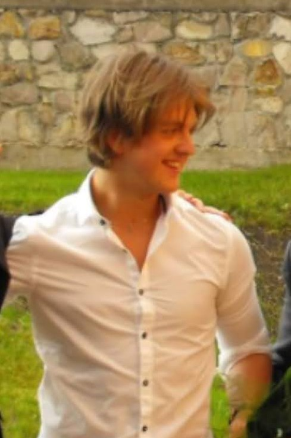

Bobkó Gyula Sajóhídvégről
Miskolcon születtem 2002. 01. 25-én. Óvodába és általános iskola alsó tagozatába Sajóhídvégen jártam. Felső tagozatot és a gimnáziumot Miskolcon végeztem. Gimnáziumban már kiderült , hogy nem élvezem azt , ha szövegeket kell szóról szóra megtanulni, igy döntöttem el, hogy inkább valamilyen reálos területen próbálok szerencsét. Sokáig nem tisztázódott bennem, hogy hova akarok tovább tanulni olyan 17 évesen döntöttem el, hogy a gépészmérnöki karra fogok jelentkezni. Így is lett 2020-ban leérettségiztem, matekból emelteztem. Ezután felvételt nyertem a BME-re és felköltöztem Budapestre. Sajnos az egyetemi életnek a közösségi részét jelen körülmények közt még nem tudtam megtapasztalni, de nagyon várom már, hogy erre is sor kerüljön.